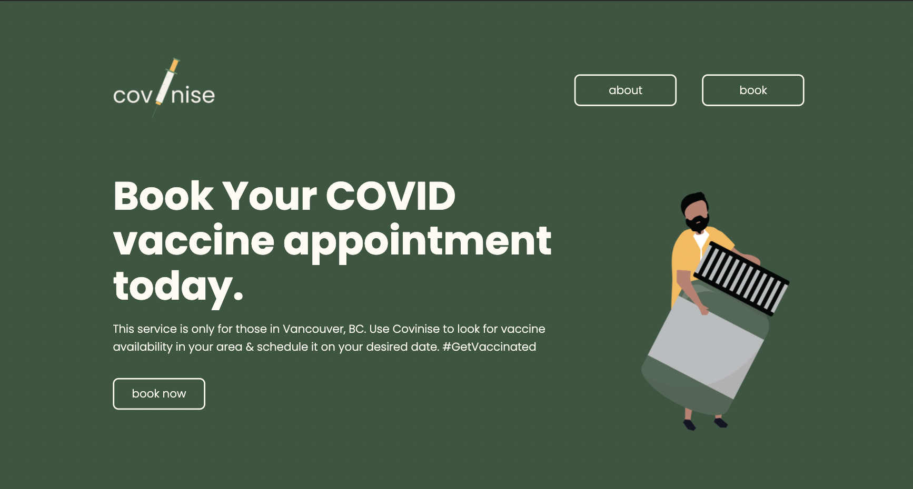
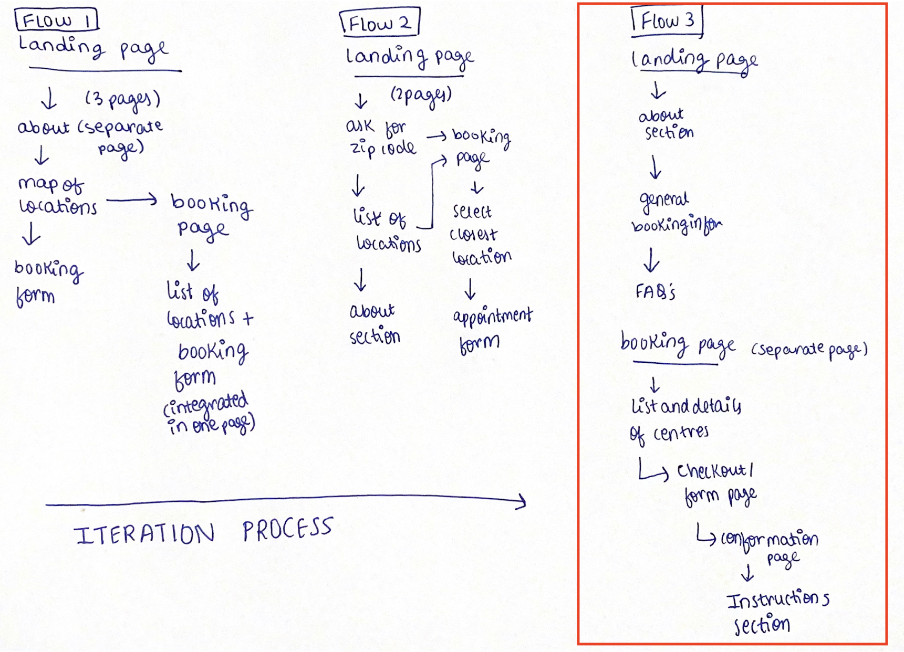
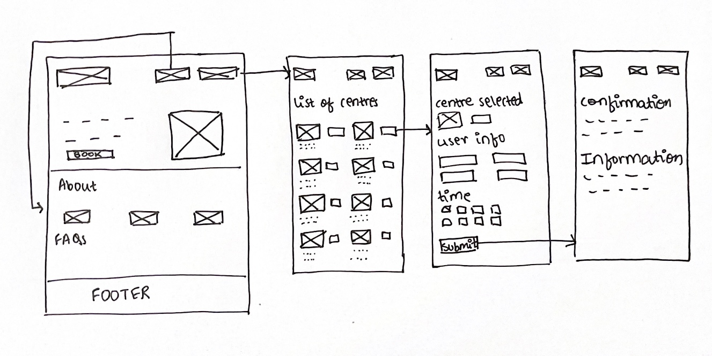
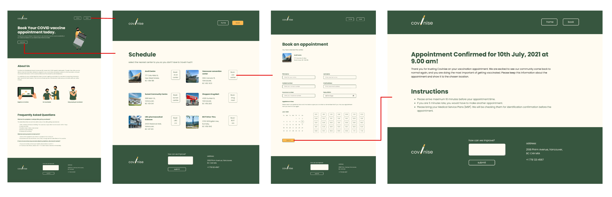
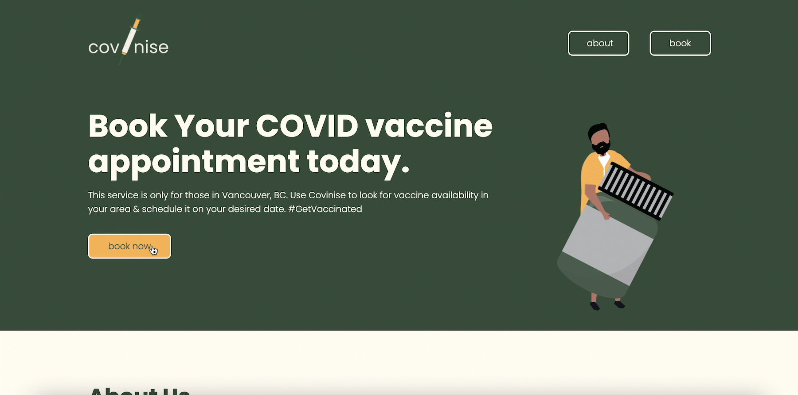
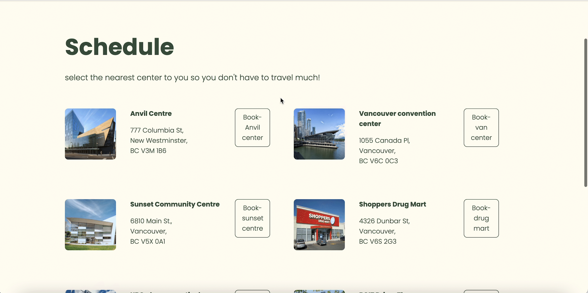
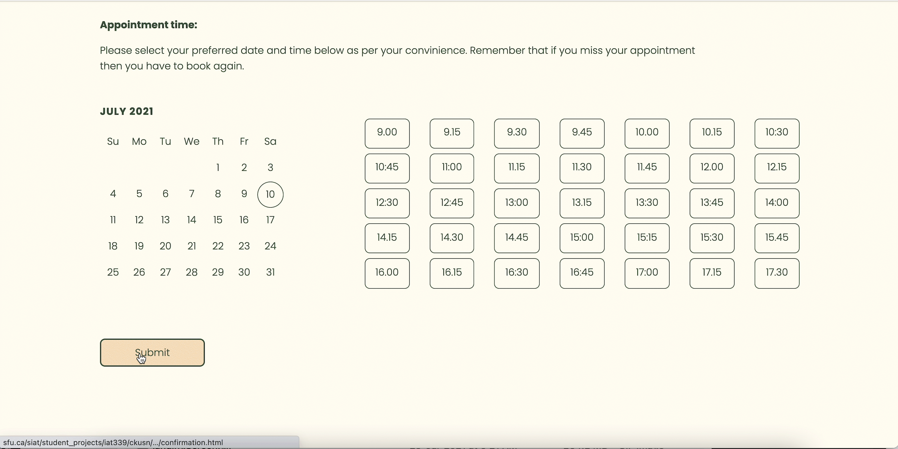
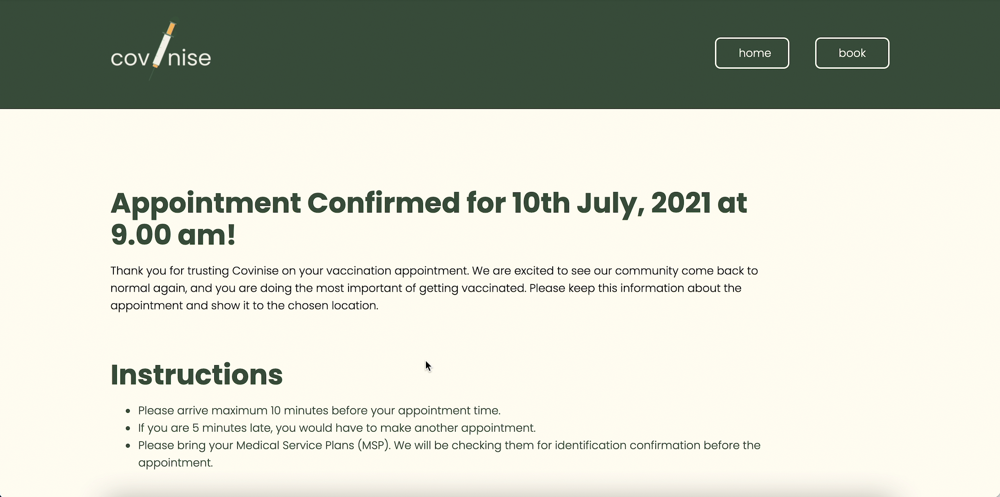

Covinise
Role:
UX designer
UI designer
Front-end developer
Team:
Chinmayee Kusnur
Firm Kongthong
Duration:
May 2021- July 2021
Summer 2021
Overview
Covinise is a microsite that lets all individuals living in Vancouver, BC access their COVID vaccine appointments easier. Through a few clicks, you are able to check all information needed to prepare for your vaccination, accessible locations to obtain vaccines, and get post-vaccination information.
This micro-site puts your comfort level first when it comes to getting vaccinated. You are able to access the schedule for each vaccine for each location. That not only will save up your time but also make sure you are satisfied with your safety choices.
Problem
For a course I took, Web design and development, one assignment told us to make an e-commerce microsite responsive using HTML and CSS. In May 2020, when people started to get their COVID vaccines across the globe, I thought of making a microsite that allows people to book their covid vaccines. The main issue was that this platform had to cater to every age group and kind of people in British Columbia. It was pretty interesting to work on this because there were hardly a few websites used to book vaccine appointments back then.
Initial process
I saw that there wasn't one common platform available in BC back then for people to book their vaccine slot. A site that gives a lot of information to people about the vaccines available and reduces the hassle of going through different portals to book a vaccine slot for themselves. So firstly, I started with the colour selection. It was super important to define the website's tone, and choosing the correct colours was essential to indicate that.
Color selection
Color was the first thing I thought of while making the initial style guide. It was a bit hard to select the colours as my aim was to spread as much positivity possible through this site. The reason is that we all waited for the vaccine for almost a year, and now it's finally here. Initially, we thought of using blue extensively, even though blue is elegant and would please the user's eye. However, I wanted to use the color that depicted a meaning and feeling. The image below was my inspiration. The idea stemmed from the fact that there is always a ray of light in the most hopeless time. The color green will help us grow with the help of bright yellow.

Here is my interpretation of these colors and how their connotation works in this concept-
#37563F
Green denotes growth, good health and visual balance. Vaccines balances the evil effects of the pandemic and improve sour immunity for good health.
#FFB950
Yellow also denotes good health and is a strong contrast against dark green. This bright colour will help energize us.
#FFFBF
Beige colour is used to balance the green and yellow and complements the two very well.
Personas
These persona's below helped me identify the key aspects I have to focus on. My main takeaway was that I have to make an intuitive website as it will be made for a wide range of age groups. Moreover, these people may or may not be comfortable using technology. Therefore, a simple, as well as an informative site is what I had to work on.


Wireflow
I started my process by brainstorming by writing the possible user flow for the website, as seen below. The main issue was how to lay the information on the site; because there was only one reference for me earlier, it got a bit hard to decide the flow of the whole microsite. This is because it took time for me to scan and understand the most relevant details I could add to simplify the booking process and because this is a microsite. However, after researching multiple medical appointment pages, I curated the current flow as a lead designer. The first two flows seen in the figure are the main flows I ideated on, and by comparing which flow fits the scope of the project, I combined the two flows and made the third flow. We were continuously trying to strike the perfect balance on the negative space around and how the negative space makes the site powerful and lets the user breathe through the whole process of booking an appointment.
Three different flows for the microsite.
Wireframes and Mockup
Using the third flow as the backbone of the microsite, I first made a basic, preliminary low-fidelity mockup on paper, as shown below, to have a visual outline website could look.
Prilimnary sketches of the decided user flow.
Then, I designed high-fidelity mockups of Figma first to have a blueprint of the site to reference when I implement. Next was to code the website using HTML, CSS and Javascript. We then tested our website on different mobile applications and people and fixed any responsiveness errors we encountered. Click here to view the website.
Landing page
The landing page was meant to be very simple so that people of all age groups can use it well. So one thing that we made sure of was to use the word 'Book' multiple times, as you can see in the gif below. This is because once the user reads the word 'book' multiple times, they will register the word and subconsciously know that the next step to the site will be to click on the 'book' button.
Additionally, on this page, an image of a man with the vaccine barrel is added to strike a visual balance on the page with the heavy font placed on the left-hand side. Also, the pop of yellow on the screen creates good contrast and breaks the monotony of the page. The home page gives basic information about covinize and frequently asked questions. We also added three images, as seen below, to encourage people to get vaccinated because visual elements attract users more, and it helps them understand the idea that is to be conveyed.
High fidelity landing page.
Schedule page
As seen below, here the user can select the desired location to get the vaccine. I used a simple grid with the address and button to avoid confusion. As it was the first time I was coding a webiste, and the whole concept of responsiveness was pretty new to me, I tried to keep the layout as simple as possible, yet it has all the necessary information.
High fidelity schedule page.
Appointment booking page
We have a form which is one of the most important elements of our micro-site. As the lead designer, I spent the most time in designing this page in order to make it pretty easy for the user to use, be it a 19 year old teenager or a 70 year senior citizen. I tried to have minimal information on the page so that the most important information is highlighted, which can be seen below in the gif. There is also a conformation page in the end, where the date and time selected is highlighted. Furthermore, there are basic instructions present for the user to remember before coming for the appointment.
 High fidelity booking page.
Reflection
This was the first project that I have hand-coded by myself with my teammate. It was a great experience to know the process of converting designs to actual code. As it was our first time, there are a few errors with responsiveness and overall spacing. In addition, the form and footer design could be better because this was the first time for me to transfer designs from Figma to code; I had less time to focus on the site's design elements. Now, in hindsight, I would fix those nitty-gritty things to make the site much better.
Nevertheless, I am happy that the concept behind using colour and interactions in a particular way made our project successful. Selecting a vaccine booking system instead of a general e-commerce website made me stand out amongst everyone else doing this course. I believe that this wasn't something I had many references to go through before making the microsite. In the end, I am very proud of my teammate Firm and I for designing and coding this microsite.